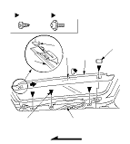
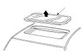

Sunroof Glass Replacement
Close the glass fully.
Slide the sunshade all the way back.
Pry out the lid (A), remove the screws (B), and release the hooks (C), then remove both bracket covers (D). With a T25 Torx bit, remove the bolts (E) from both glass brackets (F).

Remove the glass (A) by lifting it up. Do not damage the roof panel.
Install the glass in the reverse order of removal, and adjust the glass height alignment.
Check for water leaks. Use free-flowing water from a hose without a nozzle. Do not use high-pressure water.
NOTE: It is normal for some water to seep past the sunroof into the sunroof frame and exit through the drains.
